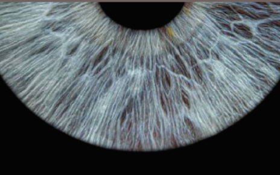
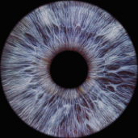

"Watching ahead. Just speak anytime."
Caregiver alert has been dispatched with your live camera view and coordinates.
Enter your Google Gemini API key to enable talking visual guidance. Saved locally on your phone.